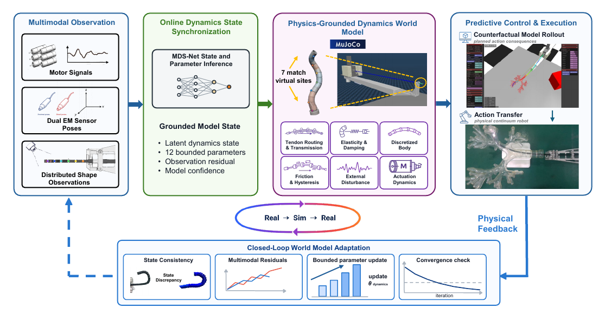
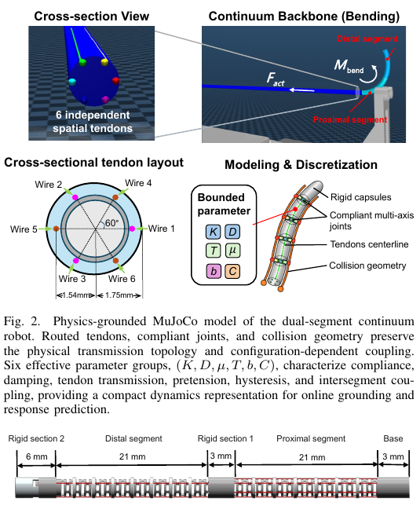
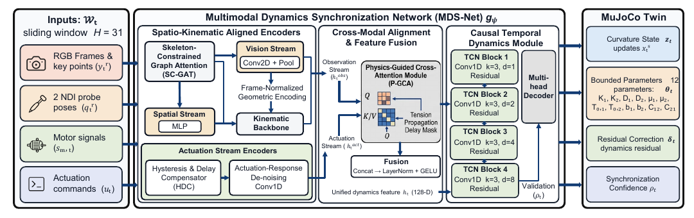
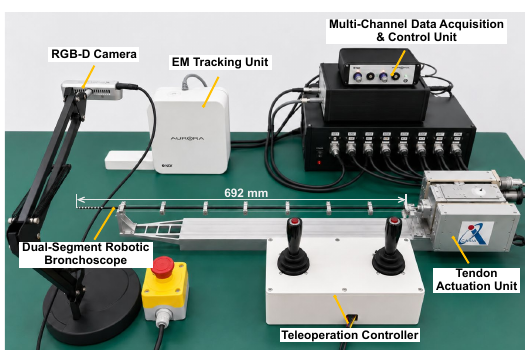
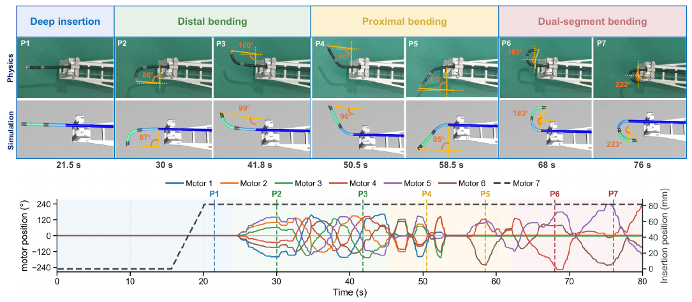
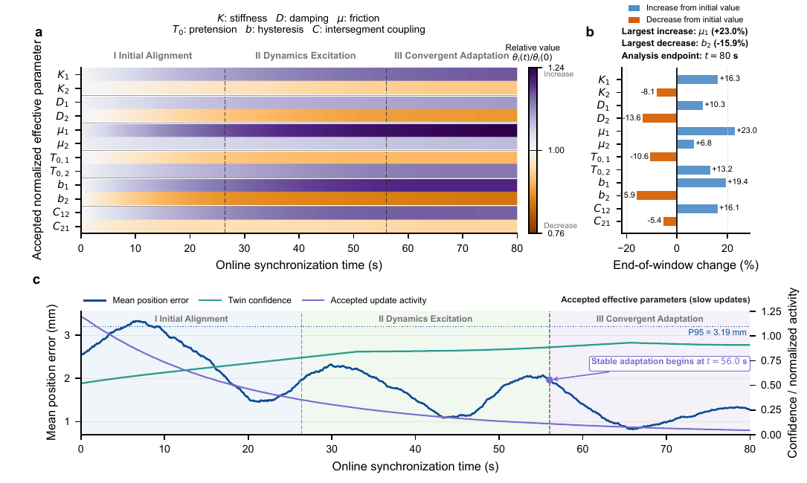
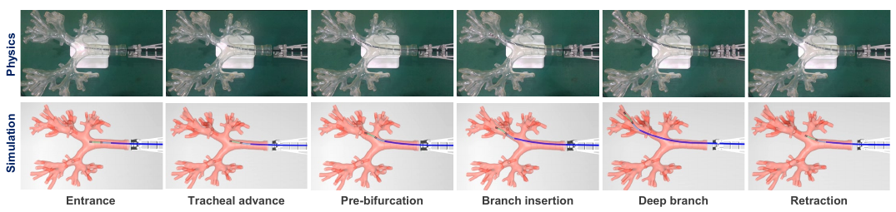
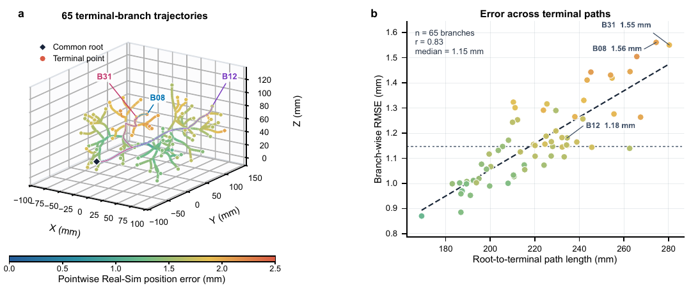

Physics-grounded world model
A dual-segment MuJoCo representation preserves measured geometry and tendon topology while exposing bounded transmission and coupling dynamics for rapid rollouts.
ICRA MANUSCRIPT IN PREPARATION / INTERACTIVE PROJECT PAGE
A physics-grounded MuJoCo twin that preserves measured mechanics while adapting its action-response dynamics from multimodal physical observations.
Dual-Segment Robotic Bronchoscope Research Platform
Ground the dynamics. Predict the response. Execute with confidence.
INTERACTIVE DEMO
Drag either compass to command the two bending segments, then use the insertion slider to advance the robot. When enabled, the non-convex airway wall acts as a reinforced physical boundary.
The first launch downloads MuJoCo WebAssembly and the full airway model.
Interactive MuJoCo twin. The browser scene is generated from the complete desktop MJCF: base mechanism, 577 mm insertion stage, passive conduit, two active segments, six routed tendons, tip camera, and rigid non-convex airway collision geometry. The airway mesh bounds the lumen and prevents the continuum robot from crossing the inner wall.
ABSTRACT
Autonomous pulmonary intervention with continuum robots remains constrained by the absence of an online dynamics representation that preserves mechanical structure while adapting simulated responses to changes in physical tendon transmission. We develop an actionable dynamics world model for a dual-segment tendon-driven continuum robot. Its MuJoCo representation captures measured geometry, compliant mechanics, tendon routing, actuator transmission, and airway contact. Multimodal grounding integrates distributed shape observations, two electromagnetic sensor poses, motor feedback, and command history. MDS-Net combines structural encoding, an actuation delay mask, and causal temporal inference to estimate curvature, effective parameters, residuals, and model confidence. Confidence and observability regulate gradual parameter adaptation, while grounded response maps support command transfer and state-dependent decoupling.

CONTRIBUTIONS
A dual-segment MuJoCo representation preserves measured geometry and tendon topology while exposing bounded transmission and coupling dynamics for rapid rollouts.
MDS-Net aligns distributed shape, dual EM poses, motor feedback, and delayed command history. Confidence and observability gate accepted state and parameter updates.
Grounded response maps support state-dependent decoupling, short-horizon prediction, command transfer, and closed-loop physical operation.
PHYSICS-GROUNDED MODEL
The 3.5 mm robot combines two 21 mm compliant segments, six independently routed tendons, rigid transition sections, a passive conduit, and a seventh motor for linear insertion.

The proximal and distal bending segments are represented as compliant rigid-body chains. Each segment is actuated by three tendons separated by 120 degrees. Because the distal tendons traverse the proximal segment, a distal command also loads the proximal section; the simulator retains this coupling rather than absorbing it into a purely geometric correction.
K1, K2segment stiffness
D1, D2segment damping
mu1, mu2effective transmission
T0,1, T0,2pretension
b1, b2direction-dependent response
C12, C21intersegment coupling
Geometry and routing remain fixed after calibration. Online synchronization updates the simulator state and these 12 bounded effective parameters without altering the physical topology.
MDS-NET
A causal window of 31 samples links observations to the actuation history that could physically have produced them.

EXPERIMENTAL VALIDATION
The platform combines seven motor drives, tendon displacement sensing, two EM probes, an RGB-D camera, distributed shape markers, and a transparent lung phantom. A workstation synchronizes acquisition, control, and simulation.
Two protocols evaluate the system: an 80 s shared-command sequence for online Real-to-Sim grounding, and model-mediated visual servoing through terminal airway paths for Sim-to-Real execution.


RESULTS
Online grounding reduces model discrepancy and maintains an actionable simulation across increasingly deep airway navigation.

Across 65 terminal paths, the grounded model stays close enough to the physical robot to support action-conditioned prediction and command transfer.


PAPER AND CODE
The associated ICRA manuscript is in preparation and has not yet been published. The title, author list, preprint, and citation record will be updated when the manuscript is made public. The repository currently provides the complete research software, MuJoCo model, control modules, and browser simulation.